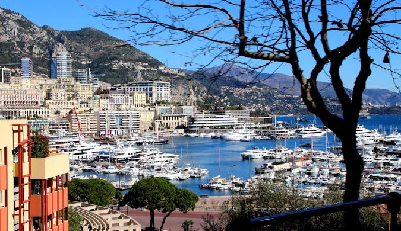
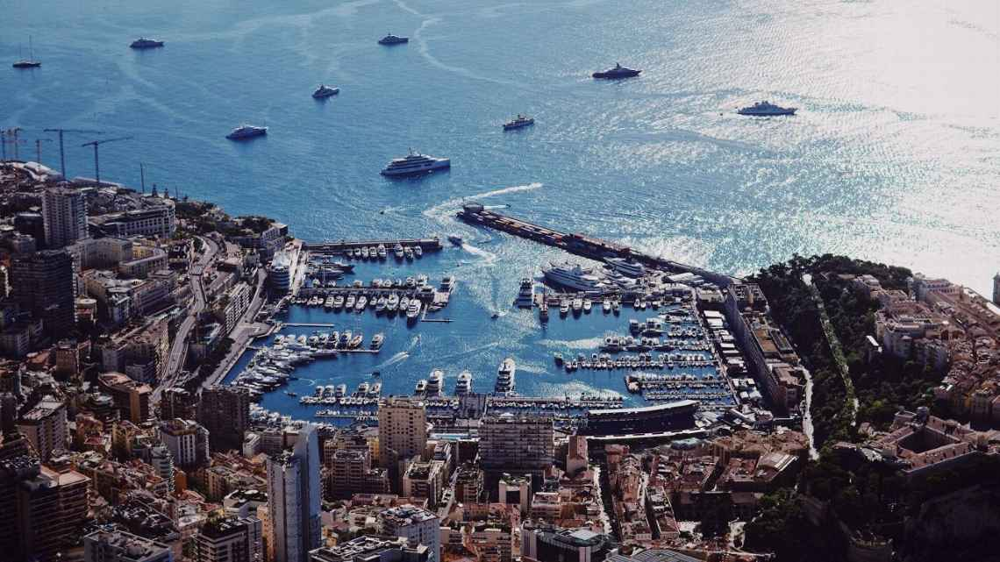
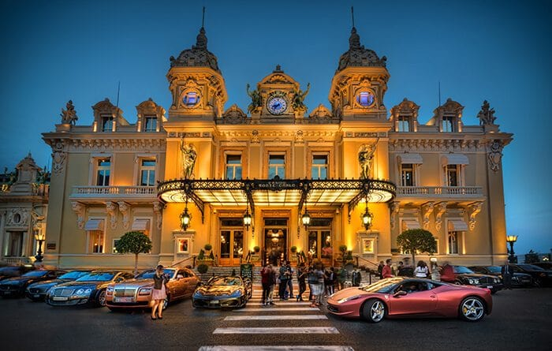
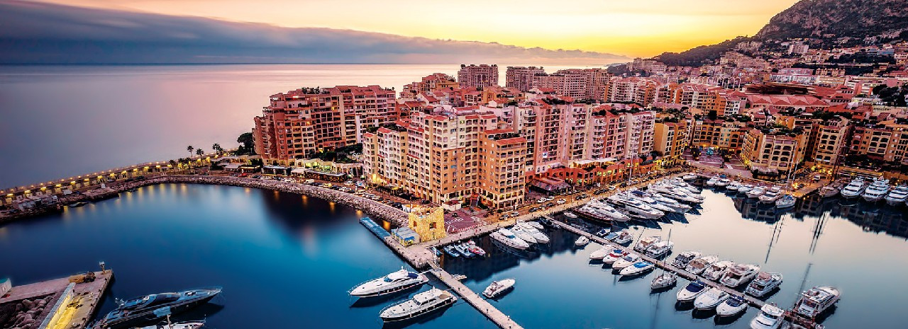

Monte Carlo Monaco egyik legismertebb városrésze, amely a luxusról, kaszinókról és autóversenyekről híres. A Földközi-tenger partján található, és a világ egyik leggazdagabb, legelegánsabb üdülőhelyének számít.
A legismertebb látványossága a Monte Carlo Kaszinó, amely nemcsak szerencsejáték-központ, hanem történelmi és építészeti nevezetesség is. Monte Carlo neve szorosan összefonódik a Monacoi Nagydíj Forma–1-es futammal, amelyet a város szűk utcáin rendeznek meg minden évben.
A környék híres luxusszállodáiról, jachtkikötőiről és exkluzív életstílusáról, ezért gyakran a gazdagság és a csillogás szimbólumaként emlegetik.

Port Hercule - Monaco elegáns kikötője

Monte Carlo Kaszinó

Monaco csillogó partvonala az alkonyatban